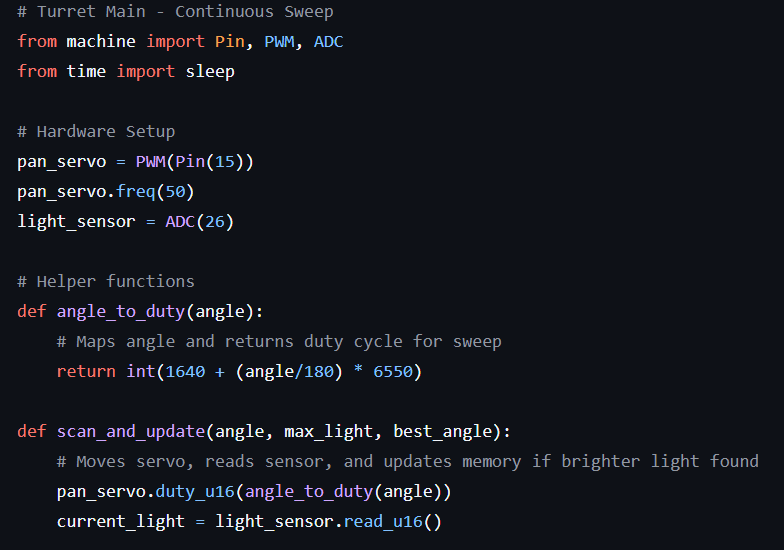
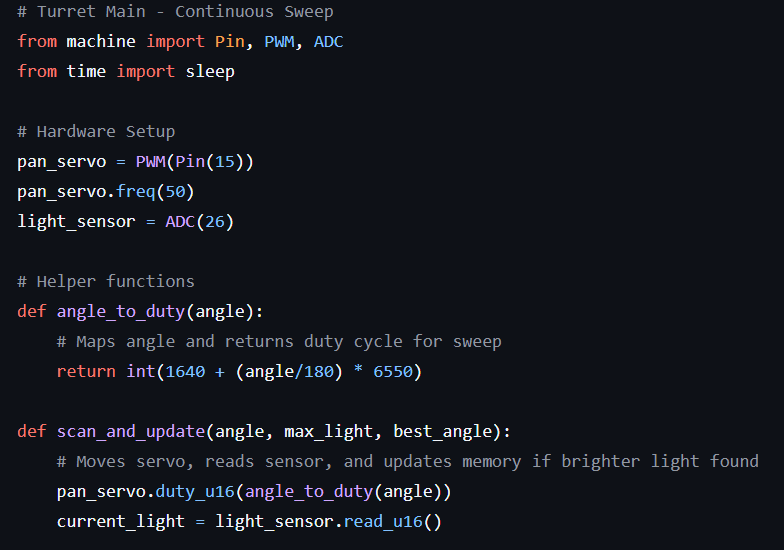

About Me
Recent WGU Software Engineering graduate passionate about robotics, embedded systems, and their role in creating a sustainable future. My experience in humanoid robotics at Tesla provided deep insight into the critical hardware-software interplay, and I'm eager to contribute to impactful AI and robotics projects. Let's connect!
Projects
Designed and built a native Android application that leverages Generative AI to automate meeting notes. The app records audio, processes it via the Gemini API, and auto-generates structured executive summaries, action items, and titles.
A "Factory PC" (Python) that controls a "Pico Controller" (MicroPython) using a host-client architecture. Demonstrates FSMs, Abstraction, and Encapsulation for robotics. TL;DR it's a tiny Lego factory.

A smart pan-tilt turret built with LEGOs and a Raspberry Pi Pico that autonomously finds and tracks the brightest light source in its environment. This project serves as a foundational exercise in robotics, covering hardware integration, sensor data processing, and autonomous "scan-and-lock" behavior using MicroPython.
 

The Vacation Planner application is designed to help users organize and manage their vacation plans and associated excursions. Users can create, view, edit, and delete vacations, each with a specific title, lodging information, and travel dates. For each vacation, users can also schedule multiple excursions, including details such as the excursion title and date.
This project is an interactive world map visualization created for the D280 course at Western Governors University. It demonstrates my skills in JavaScript, HTML, CSS, and Angular.
This project is a customized parts/products catalog developed for the D287 course at Western Governors University. It demonstrates skills in Java, HTML, CSS, and Spring Boot.
Professional Experience
R&D Engineering Technician
June 2025 - PresentCharge Robotics
- Accelerating renewable energy through automated solar construction.
Engineering Technician - Optimus Engineering
November 2024 - June 2025Tesla, Inc.
- Supported humanoid robotics development by collaborating with engineering to maintain a fleet of robots and deploy innovative mechanical updates.
- Utilized command-line interface (CLI) tools to configure, control, and update software on humanoid robots.
EOL Technician 3/Y
July 2019 - October 2024Tesla, Inc.
- Conducted repairs and quality checks to ensure new vehicle production met strict quality standards and aligned with customer expectations.
- Spearheaded a training project on low voltage electrical diagnostics, improving team efficiency and accuracy.
- Supported the heavy forensics team with high voltage diagnostics, repairs, and root cause analysis to ensure vehicle quality and safety.
Express Technician
March 2016 - July 2019Toyota Town of Stockton
- Performed preventative maintenance, light repairs (brakes, alignments), and managed warranty work for Toyota dealership customers.
Express Technician
September 2013 - March 2016Tracy Honda
- Performed preventive maintenance and minor repairs to ensure customer satisfaction.